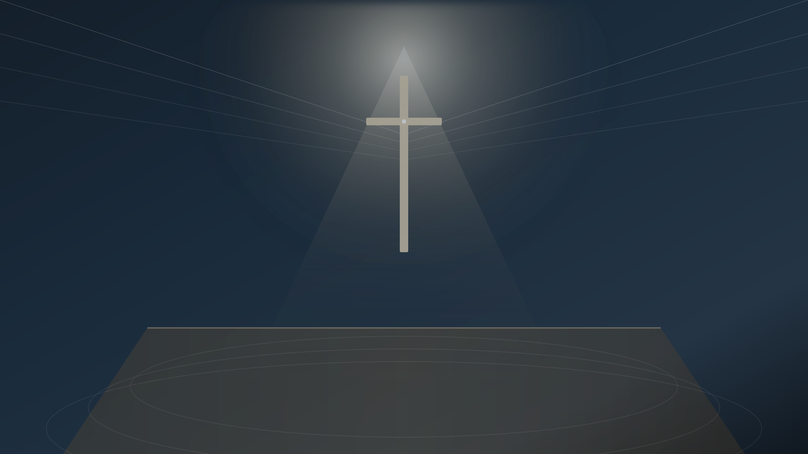

從早期的聚會場所，到今日觀塘電訊一代廣場 23 樓新堂址（佔地 3,813 呎）， 我們在神的恩典引領下扎根成長，成為眾弟兄姊妹屬靈的家園與福音的燈臺。
在繁華繁忙的觀塘核心，為心靈預備一座安歇與得力的屬靈港灣。
在靜謐典雅的新堂中，以詩歌、禱告與神的聖言聚焦於基督，使每位前來尋求神的肢體得著聖靈的更新與力量。
透過扎實的聖經教導、門徒培訓（如總會《從三一論看信仰》課程）與團契小組生活，彼此激勵在愛中建立。
推動「天國小錢」建堂與差傳事工，走入社區關懷弱勢，在大專院校與職場見證主恩，實踐福音大使命。
「你們要將當納的十分之一全然送入倉庫，使我家有糧，以此試試我，是否為你們敞開天上的窗戶，傾福與你們，甚至無處可容。這是萬軍之耶和華說的。」
掌握迦福堂各項聚會、活動與家事消息
感謝神帶領迦福堂正式遷進觀塘電訊一代廣場 23 樓新堂！全體同心委身，立志同建神家。
區會聯合崇拜及神學講座定期舉辦，鼓勵眾弟兄姊妹積極參與，深化信仰生命。
為新堂的各項裝修、供款及事工拓展同心守望，凝聚各團契與家群體同心屈膝禱告。